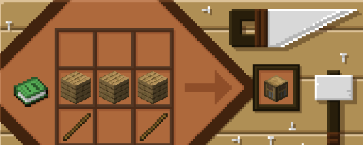

В нашем сообществе « ThunderStorm Emprire» действует Ранговая иерархия. Она представляет собой систему взаимодействия между участниками сообщества.
Исключение: По личному разрешению Императора.
“ThunderStorm Empire”. Появляется возможность состоять в группе, общаться в беседе и играть на сервере - StormLand.
Пробудете в Империи 30 дней.
Наиграете на сервере 24 часа.
Требуемое количество баллов иерархии: 30
Пробудете в Империи 6 месяцев.
Наиграете на сервере 7 дней.
Требуемое количество баллов иерархии: 90
Принесёте достаточно пользы.
Пробудете в Империи 12 месяцев.
Наиграете на сервере 14 дней.
Требуемое количество баллов иерархии: 210
Принесёте достаточно пользы.
Пробудете в Империи 24 месяцев.
Наиграете на сервере 30 дней.
Требуемое количество баллов иерархии: 460
Эту должность получают участники, которые проявили себя как грамотные организаторы: главы бригад, лидеры организаций. Вы хорошо должны знать империю, и какое для него решение будет правильным. Вы должны уметь постоять за свой выбор / мнение и так же уметь отвечать на поставленные администрацией вопросы, так как принятое решение будет влиять на весь сервер целиком.
4. Обязанности:
- - Стратегическое планирование:
Разработка и реализация долгосрочных стратегий развития Империи в различных областях. - - Управление ресурсами:
Распределение государственных ресурсов (включая алмазы) между министерствами в соответствии с их вкладом и потребностями. - - Управление рангами:
Разработка и реализация системы повышения/понижения рангов, основанной на объективных критериях и заслугах игроков.. - - Контроль деятельности министерств:
Анализ эффективности деятельности министерств и предоставление рекомендаций по их улучшению. - - Собрание министров:
Планирование и проведение ежемесячных собраний министров для отчёта о проделанной работе и принятие решений о соответствие размера заработной платы и выполненной работы .
Список министерств:
1. Название: Министерство строительства.
2. Цель: Реализация проектов в сфере строительства и архитектуры на сервере.
3. Структура:
4. Обязанности:
- - Планировка проектов.
- - Поиск материалов (скриншоты, лайтматика и т. д.).
- - Поиск места для строительства.
- - Создание разметки.
- - Составление списка ресурсов.
Отдел планирования:
- - Выполнение строительных работ в соответствии с планами.
- - Разделение строителей на разряды в зависимости от умений (бронзовый, железный, золотой, алмазный, незеритовый, рубиновый)
- - Организация работы по системе партнерства (ответственный и помощник).
- - Накопление опыта и повышение разрядов.
Отдел строительства:
- - Предоставление услуг строительства игрокам.
- - Распределение заданий строителям и планировщикам.
- - Выдача разрядов строителям.
- - Контроль над процессом строительства.
Административный отдел:
5. Стандарты и ценности:
1. Название: Министерство экономики.
2. Цель: Создание и поддержание процветающей и стабильной экономики на сервере.
3. Структура:
4. Обязанности:
- - Разработка и реализация фискальной и налоговой политики.
- - Регулирование торговли и внедрение правил импорта и экспорта.
- - Определение и регулирование цен на товары и услуги.
- - Составление и выполнение годовых финансовых планов и бюджетов.
5. Стандарты и ценности:
1. Название: Министерство юистиции.
2. Цель: Надзор и управление системой правосудия Империи, обеспечение соблюдения законов и поддержание правопорядка.
3. Структура:
4. Обязанности:
- - Обеспечение соблюдения законов.
- - Рассмотрение и вынесение решений по юридическим вопроса.
- - Наказание нарушителей.
- - Поддержание правопорядка.
Главный судья:
- - Возглавляет прокутатору.
Верховный прокурор:
- - Надзор за соблюдением прав и свобод игроков.
Прокуратура:
5. Стандарты и ценности:
1. Название: Министерство снабжения.
2. Цель: Обеспечение и управление ресурсами, необходимыми для сервера.
3. Структура:
4. Обязанности:
- - Ведение учета и распределение всех ресурсов на сервере.
- - Создание и обслуживание хранилищ и складов для хранения ресурсов.
- - Координация с другими министерствами и органами для обеспечения наличия необходимых ресурсов.
- - Ответствен за учет и распределение ресурсов, создание и обслуживание хранилищ и складов.
Департамент управления ресурсами:
- - Организация добычи, сбора и обработки ресурсов.
- - Определение участков для добычи и сбора ресурсов.
- - Выполнение добычи, сбора и обработки ресурсов в соответствии с установленными стандартами.
- - Ответствен за добычу, сбор и обработку ресурсов.
Департамент производства и сбора:
- - Управление казной Империи.
- - Распределение ресурсов для призов, вознаграждений и других целей.
- - Ведение учета финансовых операций.
- - Ответствен за управление казной Империи и распределение ресурсов для призов, вознаграждений и других целей.
Департамент казны:
5. Стандарты и ценности:
1. Название: Министерство просвещения.
2. Цель: Сохранение и развитие имперской культуры, воспитание лояльных и просвещенных игроков, укрепление единства Империи и пропаганда имперских идеалов.
3. Структура:
4. Обязанности:
- - Разработка и реализация образовательных программ: Создание учебных материалов, квестов и событий, направленных на ознакомление игроков с историей, традициями и ценностями Империи.
- - Проведение церемоний: Организация и проведение церемоний повышения в ранге и бракосочетаний, придание им должной торжественности и важности.
- - Поддержание карты мира: Регулярное обновление и уточнение карты, сбор информации о поселениях и владениях игроков.
- - Создание художественных проектов: Разработка и реализация проектов по улучшению визуального восприятия игрового мира (мап-арты, декорации и т.д.).
- - Пропаганда имперских ценностей: Распространение информации об имперских идеалах и ценностях через различные каналы коммуникации.
5. Стандарты и ценности:
Для чего нужны спонсоры?
Каждый месяц нам приходится оплачивать хостинг нашего сервера. Мы никогда не будем заставлять игроков платить за игру, никогда не будем добавлять донат, который бы давал преимущества над остальными в игровом процессе. Сервер держится лишь на пожертвованиях участников проекта, благодаря которому он развивается и до сих пор не закрывается. Для того, чтобы больше людей жертвовали своими финансами на благо проекта, мы добавили возможность покупать спонсорку. Привилегия спонсора действует ровно месяц. Статус спонсора дает некоторые возможности и прикольные плюшки, благодаря которым, вы будете выделяться среди других ;)
Глава клана: tellathelegend
Спонсор 200р в месяц
пример: "&4Всем привет"
Двоичные коды &(1-9) и т. д.
Спонсор+ 300р в месяц
пример: "&4Всем привет"
Двоичные коды &(1-9) и т. д.
общая информация
StormLand 3 представляет из себя концепцию единого города. Поэтому на основном сервере МВ закрыт ад и энд. Но есть еще один сервер МФ, в нем вы можете строить свои фермы, маленькие базы, но находится в нем бесконечно не сможете. Также существует система связки чата, все сообщения, отправленные в глобальный чат будут также перенаправленны на другой сервер, тем самым вы сможете обмениваться сообщениями на разных серверах. Еще чтобы появилась возможность не исчерпать запас ресурсов в МВ была добавлена синхронизация ваших данных между МВ и МФ(здоровье,эффект зелья,инвентарь,эндер сундук,броня,уровень и голод).
На нашем сервере есть возможность использовать такие моды как: plasmovoice emotecraft
Все предметы к примеру такие как факела, лампы,грибосветы и т.п. излучают свет если их держать в руке.
На сервере существуют могилы после смерти, если вы не забирете могилу втечение 15 минут, она задеспавнится и все ваши вещи пропадут.
Гайд по Brewery «Алкоголь»
На нашем сервере есть плагин на алковарение, позволяющий вам варить разные напитки.
Далее следует инструкция по тому, как делать свои напитки.
Инструкция:
Для создания любого напитка необходимо следующее:
1. Рабочее место и создание
Рабочее место состоит из котла и костра стоящих друг над другом.
Тут начинается создание напитка. В котел заливается вода и закидываются ингредиенты (ПКМ по котлу).

2. Бочки
Существует 3 типа бочек:
Чтобы создать бочку надо поставить табличку с надписью barrel, если бочка будет успешно создана,
вам это сообщат в чат.
Премечание: Только для маленьких и больших

Маленькая бочка состоит из 4 ступенек

Большая бочка состоит из 16 ступенек, 20 досок и забора
Постройка бочек:

Шаг 1. Устанавливаем перевернутыми ступени (далее п. ступени) квадратом 2х2:

Шаг 2. Завершаем конструкцию ступенями и табличкой Barrel:

Шаг 1. Устанавливаем сочетание п. ступени‒доски‒п. ступени прямоугольником 4х3:

Шаг 2. Вторым слоем устанавливаем доски:

Шаг 3. Последним слоем ставятся ступени‒доски‒ступени, забор в середине первого слоя и табличка с надписью Barrel:
3. Дистилляция
Для многих напитков крайне важный процесс. Осуществляется он в зельеварке со светопылью.


Дополнительная информация
Для разных напитков используется разный тип дерева, из которого изготовлена бочка.
Напитки настаиваются по такому принципу: 1 год в игре = 20 реальным минутам.
Не кладите напитки в бочку, они будут там дальше настаиваться, лучше воспользуйтесь сундуком.
Для дистилляции не обязательно класть порошок, достаточно светопыли.
Хотите узнать сколько варится напиток, возьмите в руку компас и кликните по котлу ПКМ.
Алкогольные напитки
Пшеничное пиво
Пиво
Темное пиво
Вино
Медовуха
Яблочная медовуха
Яблочный сидр
Яблочный ликер
Виски
Ром
Водка
Грибная водка
Гоголь-моголь
Джин
Текила
Абсент
Зеленый абсент
Огненное виски
Золотая водка
Самогон
Фильтрованное пиво
Итальянское вино
Шампанское
Чача
Сакэ
Грибное пиво
Эль
Черный русский
Шишинская настойка
Бурбон
Двойной бурбон
Кумыс
Безалкогольные напитки
Суп из картошки
Ромашковый чай
Японский чай
Квас
Горячий шоколад
Кофе со льдом
Кофе
Свиной суп
Чай из травы
Чай из папоротникa
Чай из морской травы
Чай из мёртвого куста
Чай из хаустонии серой
Рассол
Чай из одуванчика
Чай из мака
Чай из лука
Чай из тюльпанов
Чай из ландыша
Чайный гриб
Чай из визер розы
Чай из спороцветов
Чай из мха
Жидкое мясо
Чай с молоком
Секретные напитки
Ядерный абсент
Энергетик
Песчаная дюна
Богатая жизнь
Темный Эль
Золотой сидр
Балтика
Пьяный лис
Святая медовуха
Святое пиво
Чай с мёдом
Голубая лагуна
Белый русский
Маргарита
Дайкири
Шишинская настойка по старому дедовскому рецепту
Гайд по арморстендам
Это очень удобный и интересный плагин,позволяющий изменять позу и сам арморстенд, вплоть до гравитации и неуязвимости.
Для взаимодействия возьмите кремень кликните по нужному арморстенд, а после по воздуху, чтобы открыть меню редактирования.
 Более подробный гайд
Более подробный гайд
Крафты на нашем сервере



Гайд по воллейбольному мячику
Плагин позврояющий создать мячик на сервере.
Чтобы создать мячик нужен иглобрюх и 8 кусков кожи.

Кликни по нему и возьми появившийся мячик.

Удобные шалкера
Плагин позврояющий открывать шалкера:
Чтобы Открыть шалкер, нужно тыкнуть ПКМ по воздуху.
Чтобы Открыть шалкер в инвентаре, кликните ПКМ по нему.
Чтобы поставить шалкер, SHIFT + ПКМ.
Починка наковален
Плагин позврояющий чинить наковальни на сревере.
Чтобы починить поврежденную наковальню, киньте на наковальню 1 блок железа.
Чтобы починить разбитую наковальню, киньте на наковальню 2 блок железа.

Наковальная после становится полностью починенной.

Универсальная камнерезка
Плагин позврояющий перрабатывать дополнительно, разные ресурсы. Также если кинуть 1 булыжник на камнерезку, то получится 1 песок.
Пример использования. Переработка дерева

Система границ
На сервере МВ(Мир выживани) - расширение ведет администрацией(Императором).
Несите алмазы в банк и расширяй.
На сервере МФ(Мир ферм) - вы должны нести алмазы в МВ в банк.
Расширение границ производится также администрацией.
Система жителей
На сервере МВ(Мир выживани) - торговля вообще запрещена.
На сервере МФ(Мир ферм) - торговля разрешена, но все торги будут за Thunder coin. Их можно обменять в банке или при торговле с жителями.

Полезные команды
Для игроков
/farm - переместится в Мир Ферм.
/surv - переместится в Мир Выживания.
/hub - переместится в Лобби.
/m [игрок] [сообщение] - отправить сообщение игроку
(можно отправить игроку, который даже находится на другом сервере).
/r [сообщение] - написать последнему игроку, с кем общались.
/mylimit - посмотреть свой лимит, сколько врменеи оставлось.
/useprom [промокд] - использовать промокод на сервере.
/xp get [all|числоL] - заточить свой опыт в бутылку (можно переносить между серверами).
/sit /lay /crawl- сесть, лечь, ползти.
команды PlasmoVoice
/disc search [видео] - найти видео/стрим с ютуба,твич.
/disc burn [ссылка] - прожечь диск видеом/стримом с ютуба/твича.
Интерактивный чат
@ник - упомянуть игрока или себя.
[item] - напишите в чате, чтобы поделиться предметом в руке.
[inv] - напишите в чате, чтобы поделиться инвентарем.
[ender] - напишите в чате, чтобы поделиться эндерсундуком.
[xyz] - напишите в чате, чтобы поделиться своими координатами
Нажав на ник игрока в чате, вам заполнится автоматически фомра - /m ник
Наведя на ник, вы можете посмотреть баллы иерархии и разную информацию.
(Все заполнители и функции распространяются на все чаты, в том числе ЛС)
команды для спонсоров
/mylimit autospent on|off - автоматически и рационально использует ваши талоны из инвентаря.
(on - включить | off - выключитть)
/disc cancel - выключить музыку.
/sethome [название] - поставить точку дома.
/home [название] - переместиться на точку дома.
/homes - посмотреть точки дома.
/ender - открыть эндерсундук.
/hat - одеть предмет на голову.
/dback - переместиться на точку смерти.
/selectcolor none|HEX - выбрать цвет в глобальном чате.
Ссылка на HEX цветаЛимиты в МФ
Общая информация
Перемещаясь в мир ферм, у вас начинается отсчет времени, потому что каждый игрок имееет ограничение по нахождении в МФ. Посмотреть свой лимит вы можете в любом мире МВ или МФ, командой /mylimit .
Но благодаря системе рангов на сервере и существовании спонсоров, можно увеличить себе базовое нахождение в мире ферм.
Нахождение в МФ, считается таким обрзоам.
1. Ваш ранг, от него зависит ваше базовое нахождение на сервере(в минутах).
2. Дополнительный процент к нахождению от базового, его может выдать вам администрация, за активную игру или как награду.
3. Дополнительный процент к нахождению от базового и надбавки, дает спонсорка, обычная 25%, спонсор+ 50%.
В итоге на нахождение в МФ влияет: Ранг, Активность, Наличае спонсорки.
Распределение времени нахождения, для каждого ранга
Новичок - 60 минут
Послушник - 90 минут
Служитель - 120 минут
Знаток - 150 минут
Элитный - 1801512к минут